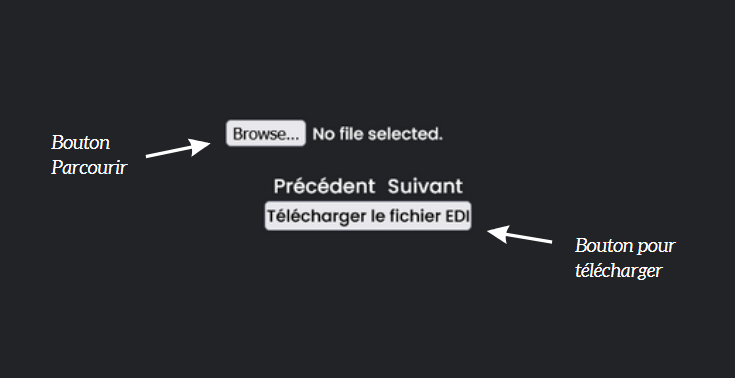
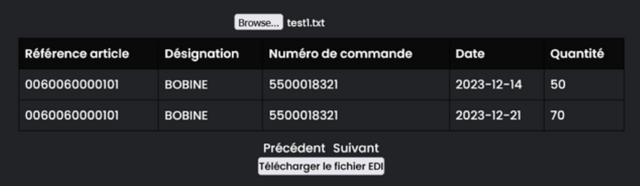
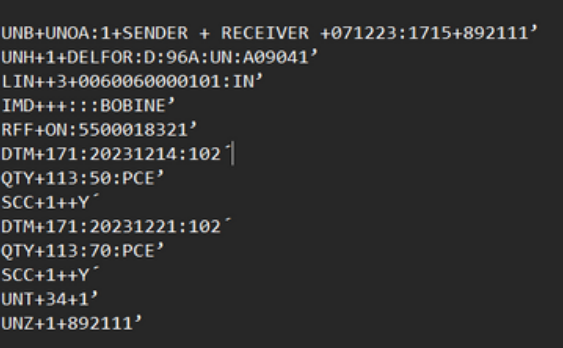
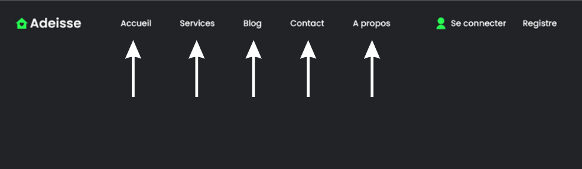
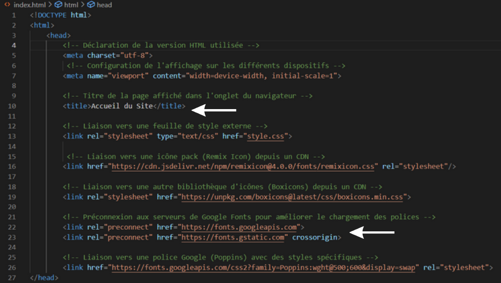
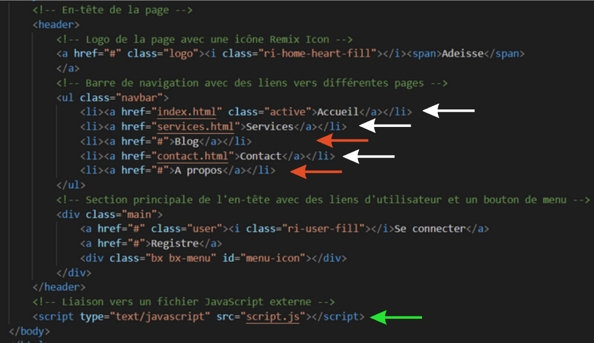
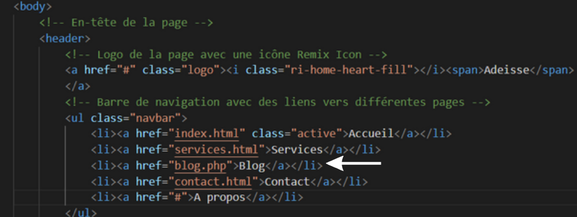

Stage 2 : Adeisse
Présentation des projets réalisés durant mon stage.
Le projet consiste à travailler sur une page web qui peut accueillir plusieurs boutons, ce qui permettra de choisir un fichier text. Ce qui permet ensuite via le code de le charger sur la page en question pour obtenir un tableau. Il y a également le bouton de téléchargement qui permet donc de télécharger les données présentes dans le tableau qui sont traduit du fichier text de base.

Voici comme se présente la page en question, il y a le bouton Parcourir permet d’aller sélectionner le fichier en question. Et il y a le bouton de Télécharger le fichier EDI, qui permet de télécharger le nouveau fichier text que l’on souhaite avoir.
Lorsque le fichier texte est sélectionné, cela permet d’afficher les différentes notions, tel que la Référence article, la Désignation, le Numéro de Commande, la Date et la Quantité.

Les Données qui sont traités dans ce tableau, sont de bases composées comme cela, ils sont dans un langage de communication de chaîne de production d'articles.

Le tableau ci-dessus est coder pour que les informations de ce fichiers soient en quelque sorte traduits de façon lisible. Pour que l'humain puisse comprendre ce que ça veut dire.
Ensuite j’ai pu créer une navbar pour que l’utilisateur puisse se déplacer entre les pages de façon fluide afin qu’il puisse accéder aux différents outils créés et mis à sa disposition.

J’ai donc créé une page principale qui est l’Accueil du site web en question, on y retrouve plusieurs pages. La page Accueil, Services, Blog, Contact et À propos. Les pages créer son Accueil,Services, Blog et Contact. Les pages Accueil et Services ont juste le menu disponible dessus. La page Blog à un tableau que je vais vous présenter par la suite. Et la page contact à le tableau par rapport au fichier text expliqué précédemment. (Les noms dans la navbar peuvent changer en fonction de la demande de l’utilisateur. Cela n’est qu’une phase de test.)
Voici donc les premières lignes de code, avec la balise “head” ou j’ai pu mettre le titre mais également un lien vers un fichier “style.css”. Également il y a ensuite des liens pour rendre le style et la mise en page plus belle et plus propre vers google fonts et autres liens que j’ai utilisé pour les pages.

Il y a la partie “header” qui est l’en-tête de la page avec le logo maison Adeisse, mais également une navbar avec le lien vers les autres pages webs. Les flèches en blanc montrent les pages créés et les flèches en rouge montrent les pages non créés pour le moment.

Ensuite il y a une div qui permet d’afficher “Se connecter” et Registre qui sont des liens que je n’ai pas développés mais qui pourrait l’être par la suite pour faire une connexion sécurisée. Et la flèche verte désigne le lien vers la page de script, “script.js” qui est elle alimentée par du code qui permet de gérer la navabar.

Il y a donc ensuite la création de la page blog.php qui est donc une nouvelle page qui amène à un nouveau tableau qui est relié à la base de données de Microsoft SQL Server Management Studio. Les données affichées sur cette page sont donc les données que j’ai pu afficher grâce à une requête SQL qui m’a permis de sélectionner la base Campus de la table dbo.Client pour ensuite afficher une partie du tableau que l’utilisateur pourra donc demander.
Et pour finir voici le dernier outil que j’ai pu créer sur une page. Un tableau qui charge quand on lui met une requête SQL bien définis dans le code pour afficher ce que l’on veut sur la page dans le tableau. Il y a donc la partie de connexion et la partie de l’appelle de la requête SQL.
J’ai donc connecté le nom du serveur Microsoft SQL Management Studio. J’ai ensuite entrer les identifiants et mot de passe de l’utilisateur que j’avais créé pour la phase de test. J’ai également rajouté un foreach au cas où il y aurait une erreur.
J’ai ensuite créé une fonction ReadData qui permet donc la connexion grâce à la fonction précédente, j’ai ensuite mis la requête SQL que l’on souhaitait. J’ai donc ensuite rajouté des éléments pour que ces données soit mis dans un tableau.
Et donc un “echo” pour afficher le début du tableau, un autre pour les en-têtes des colonnes et d’autre pour les lignes et un dernier pour la fin du tableau. J’ai mis un catch qui est une Exception si cela ne fonctionne pas il y aura un message d’Erreur qui s'affiche et écrira “Error”.
Je ne montre pas les données présente dans le tableau et le code car ces données sont des données confidentielles d’une base de données qui est fonctionnelle, cela retourne d’informations gardées confidentielles par l’entreprise Adeisse.